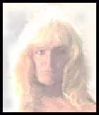
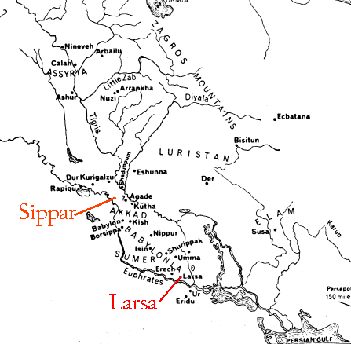
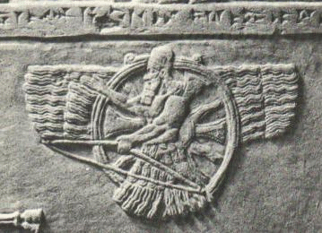
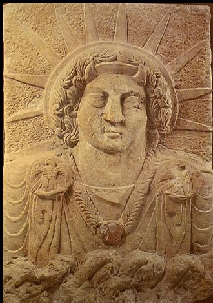

AZAZEL, také známý jako ZAZEL, SAMYAZA, SAMYAZAZEL, SHAMGAZ, SHEMYAZA, SHAMYAZA, SHEMIHAZAH, SHAMASH (babylonské), UTU (sumerské jméno; znamená zářící*) SAMAS (Akkadské), BABBAR (sumerské), Ashur (Asyrské), SHAMIYAH (Hathra), SEMJAZA
- Znamení zvěrokruhu: Kozoroh/Vodnář (obojí 1-10 stupňů)
- Tarotová karta: Eso mečů
- Planeta: Saturn, lunární jižní uzel (Dračí ocas)
- Barva svíčky: modrá, černá
- Kov: Olovo
- Živel vzduchu
- Symboly: orel a škorpion; Faravahar (viz níže)
- Číslo: 20
- Hodnost: Hlavní nositel praporu pekelné armády
Azazel spolupracuje přímo se Satanem
Má na starosti nejvyšší bezpečnost v pekle.
*Toto mi nadiktoval osobně
Od velekněžky Maxine:
Azazela znám dobře a jsem mu velmi blízká. Je to velmi vysoce postavený a důležitý bůh. Je vysoký sedm a půl stopy, velmi silně stavěný, se světlými blond vlasy, které mu sahají po ramena a vlají. Má
pronikavé modrošedé oči. Je velmi mocný a oddaný Luciferovi.
Očekává stoprocentní výkon a dokáže být vážný a přísný. Úzce spolupracuje s lidmi a vzdělával je v dávných dobách. **AZAZEL NENÍ PAIMON jak tvrdí některé grimoáry zneužívání. Oba jsou to jiní bohové.
Azazel je princ. Paimon je král. Azazel je velmi vysoce postavený; VELMI
blízký Luciferovi. Říká, že je starý asi 60 000 pozemských let.
Azazel se mnou na této stránce intenzivně spolupracoval. Přivedl mě k mnoha různým odkazům a zdrojům (uvedeným níže). Řekl mi, abych zmínila „Chammurapiho zákoník“ a že obsah tohoto dokumentu
byl v průběhu staletí drasticky pozměněn a to, co máme nyní, se vůbec nepodobá originálu. Azazel zastupuje spravedlnost a v žádném případě nepodporuje podřízenost nebo nastavování druhé tváře.
Ačkoli existuje několik zpráv o tom, že Azazel byl ženatý s různými Bohyněmi, jsou nepřesné. Azazel si vzal lidskou manželku asi před 10 000 lety.
„Azazel se mi zjevil s neuvěřitelně zářivě zelenou aurou.
Je přísný, pokud neděláte to, co se od vás vyžaduje, ale je velmi přátelský a chápavý - zvláště pokud procházíte
špatným obdobím, jako např. psychickými útoky nebo špatnými planetami. Azazel mi pomohl a vedl mě. Vzpomínám si, když jsem procházel opravdu špatnými planetárními časy a když se věci dostaly do bodu, kdy jsem se cítil, jako že se zlomím, Azazel-sama mě uklidňoval a dodal mi pocit, že otec Satan, on a bohové jsou na mě hrdí a že špatné časy pominou. Jsem Azazelovi tak vděčný!“
Hail Azazel!
--Vovim Baghie
|  | Azazel dříve něchtěl, aby se to vědělo, ale je synem Satana, nikoli Belzebuba. |
|  | Azazel je válečný bůh spravedlnosti a pravdy. Jeho městem bylo „Sippar“, dále starověké akkadské město na východním břehu Eufratu, severně od Babylonu a sumerská města Larsa/Ellasar. Sippar leží 20 mil (32 km) jihozápadně od Bagdádu v Iráku. Sippar bylo jedním z prvních měst, která založili bohové. |
„Sumerské jméno pro Ellasar je uvedeno jako Ararwa, zřejmě pro Arauruwa, „sídlo světla“, což je ve skutečnosti význam ideografické skupiny, kterou je zapsáno. Ruiny tohoto starověkého místa jsou dnes známé jako Senqara a leží na východním břehu řeky Eufrat, zhruba uprostřed mezi městy Warka (Erech) a Muqayyar (Urem Chaldejů).
Kromě jména Larsa se zdá, že to byl také nazývané Aste azaga „svaté (jasné, čisté) sídlo (nebo trůn)“, a obě
jména byla zřejmě důsledkem toho, že město bylo jedním z velkých babylonských center uctívání slunečního boha.
Stejně jako většina hlavních babylónských měst mělo velkou chrámovou věž, nazývanou E-dur-an-ki, „dům svazku nebes a země“. Chrám ve městě nesl stejné jméno jako chrám v Sipparu, tj. E-babbar, „Dům světla“, kde byl uctíván bůh slunce Samas. Tento chrám obnovil Ur-Engur, Chammurabi (Amrafel), Burna-burias, Nebukadnesar a Nabonid. Mezi tabulkami nalezenými na Loftus na tomto místě byla ta, která udává délkové, čtvercové a objemové míry, což poukazuje na toto místo jako na jedno z tehdejších velkých středisek babylonské vzdělanosti. Kromě pozůstatků těchto chrámů se zde nacházejí také stopy po hradbách a zbytky domů obyvatel. Město bylo zpočátku spravováno vlastními králi, ale poté se stalo součástí Babylonské říše někdy po konci Chammurapiho vlády.“¹
|  | Azazel je Bůh spravedlnosti a pomsty. Je mistrem černých umění a ochráncem poutníků. Jeho symbolem je faravahar (na obrázku vlevo). Představuje svobodu volby a ochranu. Faravahar je původní okřídlený disk. |
|  | Byl vůdcem povstalců Igigi. Azazel je také bohem věštění a mnozí věštci se s ním radili. Byl také hlavním božstvem města Hathra. Jako hlavní božstvo města Hathra byl známý jako "Shamiyah." Všimněte si rohů na fotografii sochy vlevo. Spolu se svým dědečkem Belzebubem ovládal vzdušné cesty pro bohy a nosil jeho symbol orla. |
„V Bad-Tibiře, založené jako průmyslové centrum, Enlil do čela ustanovil svého syna Nannara/Sina; texty o něm hovoří v seznamu měst jako o NU.GIG („Ten z noční oblohy“). Tam, jak se domníváme se narodila dvojčata Inanna/Ištar a Utu/Šamaš - událost, která se vyznačovala spojením jejich otce Nannara s dalším zvířetníkovým souhvězdím Blíženců (dvojčat). Jako bůh vycvičený v raketové technice bylo Šamašovi přiřazeno souhvězdí GIR (což znamená jak „raketa“, tak „krabí dráp“ nebo „rak“). To je následované Ištar a souhvězdím Lva, na jehož hřbetě byla tradičně zobrazována.“²
V židovské/křesťanské Bibli se píše, že „Azazel naučil lidi vyrábět meče, nože, štíty a zbroje“.
Grimoáry o zneužívání duchů tvrdí, že Azazel je génius v práci s kovy, mineralogii a geologii. To vše je symbolické. Je mistrem alchymie; duchovní alchymie. Duchovní alchymie má co do činění s přeměnou prvků v lidské duši, čerpáním energie ze země a duchovní prací se zemí. Každá ze sedmi
čaker je reprezentována určitým kovem. Azazel pracuje se zasvěcenými Satanovými žáky na dosažení božství.
Vše výše uvedené je duchovní. Biblická výpověď byla překroucena. „Meče, nože, štíty a zbroje“ jsou duchovními zbraněmi. Je odborníkem na planety, souhvězdí a astrologii.
Je také velmi zručný v umění, kosmetologii, výrobě ornamentů a šperků. Azazel vytváří krásu.
AZAZELŮV PRVNÍ SIGIL
AZAZELŮV SUMERSKÝ SIGIL
{kind=link}
{kind=link}
*Mnozí z původních bohů byli pro svou mocnou auru známí jako „Zářící“.
¹ International Standard Bible Encyclopedia
² The 12th Planet, Zecharia Sitchin © 1976
Další reference:
Religion in Ancient Mesopotamia, Jean Bottéro
Přeleženo Teresou Lavendar Fagan, University of Chicago Press, © 2001
An Illustrated Dictionary, Gods, Demons and Symbols of Ancient Mesopotamia, Jeremy Black a Anthony Green, © 1992
Mythology of the Babylonian People, Donald A. Mackenzie © 1915
© Copyright 2005, 2016, Joy of Satan Ministries;
Library of Congress Number: 001-216-457